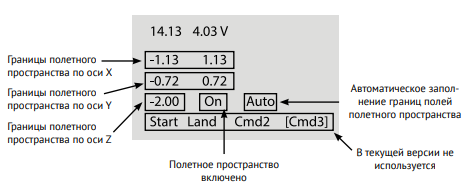

Система навигации в помещении Геоскан Локус¶
Система позволяет создать контролируемую полетную зону с максимальным размером 10х10х4 метров. Она обеспечивает точное и безопасное управление квадрокоптером независимо от других систем навигации (GPS/ГЛОНАСС)

Скачать pdf инструкцию по настройке системы навигации
Комплект системы:
- блок управления;
- 4 ультразвуковых излучателя;
- бортовой модуль;
- соединительные провода;
- программа LPS для синхронизации с компьютером (скачать последнюю версию );
Установка полетной зоны¶

Установите ультразвуковые излучатели в будущей зоне полета. Расположите их в вершинах полетной зоны так, чтобы они были направлены к ее центру. При этом:
- минимальная высота установки излучателей - 2 м
- минимальная дистанция между излучателями - 3 м
Примечание
Система будет работать точнее, если на полу в помещении будет мягкое покрытие (ковер, ковролин).
Проводами соедините каждый излучатель с блоком управления. Следите, чтобы не перепутать провода и разъемы, они подписаны. Блок управления лучше расположить за пределами полетной зоны. Его можно подключить к ноутбуку или компьютеру через порт USB. Блок управления и бортовой модуль общаются по радиоканалу.
Рулеткой или дальномером измерьте расстояния между излучателями и высоту их установки. Удобнее всего задавать полетную зону в форме квадрата или прямоугольника. По результаам измерений формируется координатная сетка полетной зоны.

На рисунке показан интерфейс программы LPS, которая используется для настройки и работы с системой позиционирования. При первом запуске программы заполните пустые поля координат для маяков. Как это сделать:
- Расстояние (в метрах) между излучателем 1 и 2 поделите на 2. Полученное значение введите в поле X со знаком «минус» для маяков №2 и №3 и без знака «минус» для маяка №1 и 4.
- Расстояние между излучателем 2 и 3 также поделите на 2 и введите значение в поле Y со знаком «минус» для маяков №3 и №4 и без знака «минус» для маяков №1 и №2.
- В поле Z введите высоту каждого излучателя над уровнем пола.
После ввода координат полетная зона сформирована и отображается в правом окне программы зеленой линией. По умолчанию углы полетной зоны отстоят от излучателя на 1 м.
Примечание
Параметры полетной зоны также можно задать напрямую на блоке управления
Нажмите кнопку на плате управления, чтобы включить систему. После этого должен загореться белый светодиод «питание» и зеленый «статус». Если этого не произошло, проверьте заряд аккумулятора.
Вверху встроенного экрана отображается время с момента включения и текущий уровень напряжения аккумулятора. При падении напряжения ниже 3 В начнет мигать светодиод «статус», сообщая о необходимости подзаряда. В этом случае подключите плату через порт micro-usb к компьютеру или зарядному устройству (output 5В 2А).
На встроенном экране координаты отображаются так же, как в интерфейсе программы LPS.

Чтобы изменить любой из параметров системы, выберите его поворотом селектора, а затем надавите на него. После коррекции (также поворотом) нажмите на селектор второй раз, чтобы подтвердить изменения и вернуться в меню.
На втором экране меню можно вручную настроить отступы от границы полетного пространства или включить режим «Auto» - тогда все настроится автоматически. Там же можно отключать ограничения полетной зоны.
Примечание
Для работы системы подключение к компьютеру необязательно. Достаточно включить блок управления и расположить «Пионер» с установенным бортовым модулем в пределах полетной зоны.
Обновление прошивки системы навигации¶
Чтобы обновить прошивку, вам понадобится компьютер с установленной программой Pioneer Station. Запустите её, выберите в меню пункт «обновление прошивки» и следуйте указаниям помощника. Нажмите и удерживайте кнопку «меню» на плате, и не отпуская её включите блок управления. Так он перейдет в режим обновления прошивки. Теперь подключите блок управления системы навигации к компьютеру кабелем USB. При выборе устройства, поставьте галочку напротив модуля BeaconUSNav.

Рекомендуется выбирать встроенную прошивку, так вы установите последнюю стабильную версию. Процесс может занять до 5 минут, не отключайте блок управления до окончания прошивки.